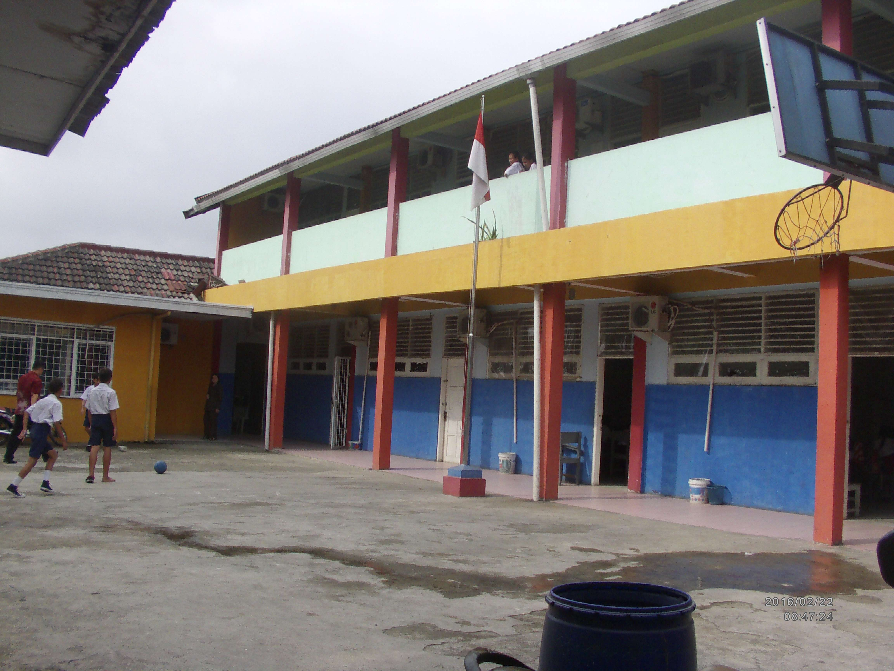

|
akbarjuliantotentang sekolah ku.
 |
|
| Beranda | tentang saya | sekolahku | syair Lagu |
tentang saya Selama bersekolah di trisula bhakti, saya belajar banyak hal penting tentang kebersamaan dan kerja sama.
masa-masa sekolah disini dipenuhi dengan momen seru bersama teman-teman dan guru-guru memberikan dorongan positif
dan saya sedang menempuh jenjang karir S1 di perkuliahan Stmik Pgri tangerang terletak di tangerang cikokol
Nama : Akbar julianto rante baliga |
Kesalahan adalah bukti bahwa kamu sedang mencoba.Rabu,19 Oktober 2026kompleks institusi pendidikan swasta terpadu di bawah naungan yayasan trisula bhakti pilihan jurusan Manajemen perkantoran, farmasi keperawatan dan akuntansi terletak di kawasan strategis sekitar taman cibodas yang ramah lapangan olahraga hingga area umum kembali ke beranda |
Tautan eksternal |
| © Copyright akbarjulianto, 2026. | |